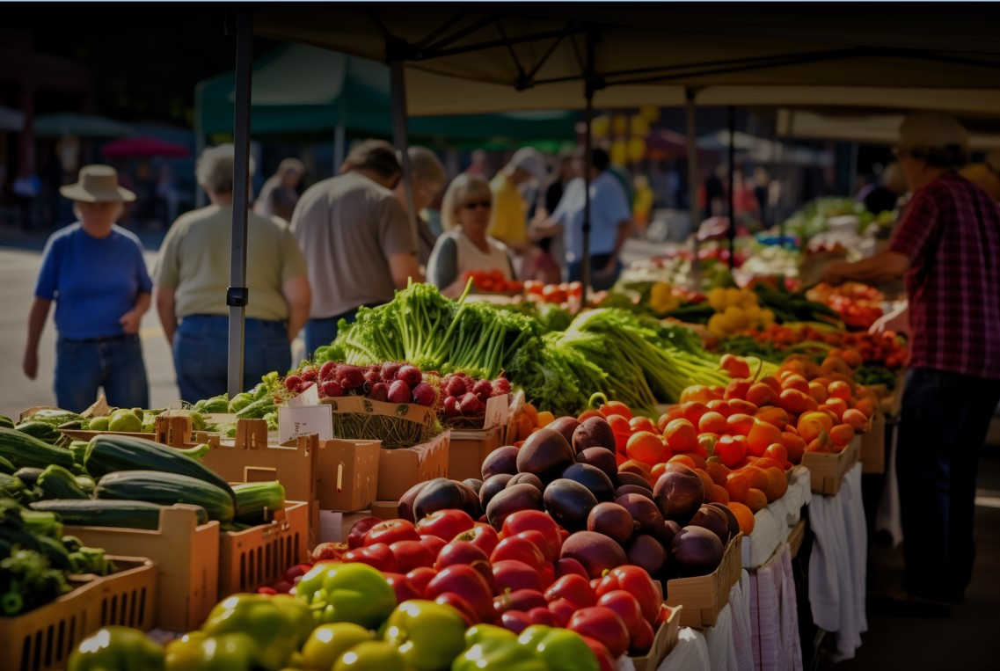
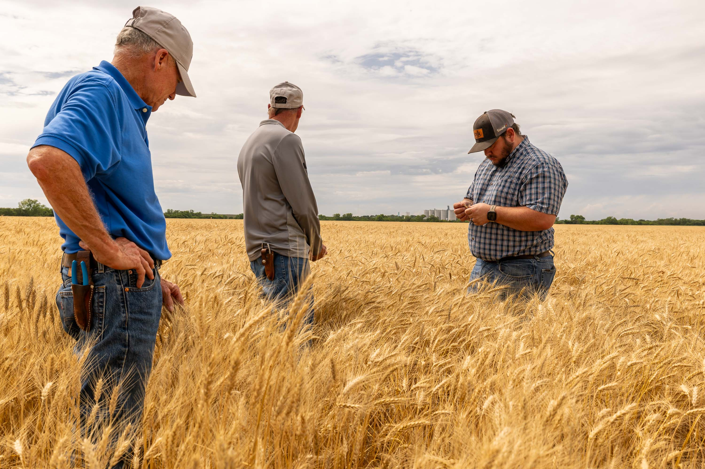
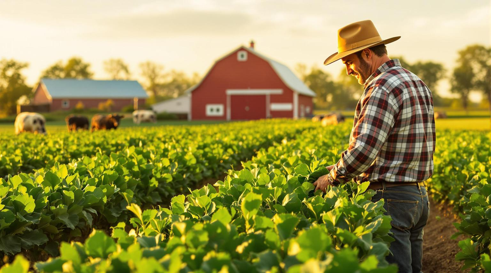
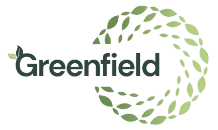
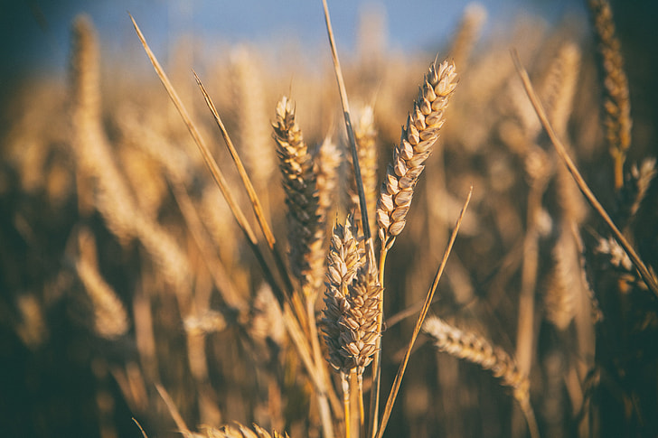

Our Story
Our journey began as a team of dedicated people who were intent on making a difference in our society. The locally available food and produce carry a comfortable, home-like theme, and we hope this encourages others like us in our efforts towards creating a more integrated community!
Greenfield Local Hub is a local grocery store located in the heart of our community in Greenfield. We are dedicated to providing fresh, high-quality products while also supporting the local farmers and food producers that deserve more credit than they recieve with larger corporate retailers.
Our mission is to create a welcoming and inclusive space where everyone can find what they need to live a healthy and sustainable lifestyle.
Thank you for choosing Greenfield Local Hub, and we look forward to serving you!


Our Partners
Greenfield Local Hub specialises solely in employing and working with the local farmers and food producers instead of large businesses to create a stronger community that can band together to help the independent people that produce the food we all love to eat. We are proud to say that everyone that we work with earns more than what they would if they sold all of their products to organisations such as Tesco and Sainsbury's, and we are proud to be able to support the local economy in this way to ensure our partners get the money they deserve for their efforts and hard work.
It is commonly known that local food is more fresh and ripe than food sold by larger retailers, and we ensure this quality by encouraging our partners to harvest their produce at the peak of ripeness.
Additionally, the shorter transportation distance to our local cooperative means that the produce leaves less of a carbon footprint, making us a more environmentally friendly choice for consumers.
Our Methods
At Greenfield, nothing is more important to us than the quality of the products we sell to you. We strive to ensure that there are no concessions in the freshness and taste of our produce, no shortcuts taken in the production process, and no methods which compromise the ecosystem.
Production and Growth
We care endlessly about the methods our partners use, and we strongly encourage them to use natural fertilisers instead of synthetic ones, and we ensure that our partners use natural pest control methods in place of harmful pesticides so that the food we sell has the lowest possible impact on the environment.

Need help?
In the event of needing assistance or wanting answers,, please don't hesitate to contact us. Our team is always here to help! You can reach a GLH representative through our contact page on this website using the navigation link at the top, or you can visit us in person at our store. We look forward to hearing from you and assissting you in any way we can!
We are an advocate for local food being more fresh and ripe than food sold by larger retailers, and we ensure this quality by encouraging our partners and food producers to sell us their produce at the peak of ripeness.
Additionally, the shorter distance to our local cooperative means that the produce leaves less of a carbon footprint when travelliong, making us a more environmentally friendly choice for consumers.
Looking for work?
Everyday. Greenfield Local Hub continues to grow and expand, and we are always looking for passionate individuals to join our team. If you are interested in working with us, please visit our contact page to get in touch with us and find out about any current job openings. We look forward to hearing from you and potentially welcoming you to the Greenfield family!
The benefits of working with us are countless, including support in financing your methods, compost, and allowing you to continue farming and producing food for us to sell on your behalf.
Our mission with our partners is to give them the support and resources they need to succeed, and every product you sell to us, we guarantee that you will earn more than working with large supermarkets and corporations.


Newsletter Benefits
The Greenfield Local Hub newsletter provides updates on the latest restocked products, special offers and discounts, and community events. By subscribing, you'll be among the first to know about new stocks from our local farmers and food producers and even recieve discounts. Additionally, you'll be informed about the farmer markets we host every half-term!
To subscribe to our newsletter, please enter your email address below which you can find at the bottom of this page.
To unsubscribe at any time, please click the unsubscribe link at the bottom of any newsletter you receive.